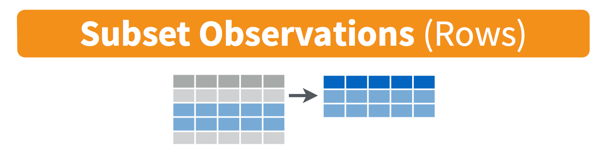
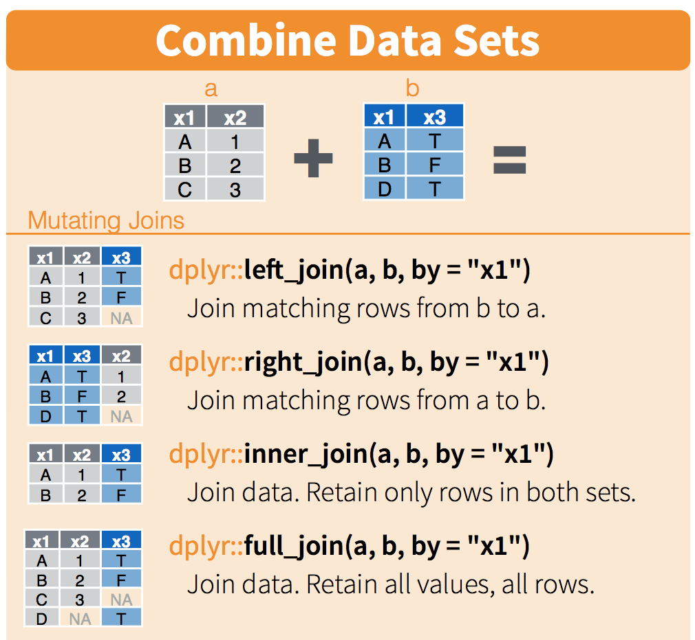

Chapter 8 Filters and joins
8.1 Summary
In previous sessions, we’ve learned to do some basic wrangling and find summary information with functions in the dplyr package, which exists within the tidyverse. In this session, we’ll expand our data wrangling toolkit using:
filter()to conditionally subset our data by rows, and*_join()functions to merge data frames together- And we’ll make a nicely formatted HTML table with
kable()andkableExtra
The combination of filter() and *_join() - to return rows satisfying a condition we specify, and merging data frames by like variables - is analogous to the useful VLOOKUP function in Excel.
8.1.1 Objectives
- Use
filter()to subset data frames, returning rows that satisfy variable conditions - Use
full_join(),left_join(), andinner_join()to merge data frames, with different endpoints in mind - Use
filter()and*_join()as part of a wrangling sequence
8.2 Set-up: Create a new .Rmd, attach packages & get data
Create a new R Markdown document in your r-workshop project and knit to save as filter_join.Rmd. Remove all the example code (everything below the set-up code chunk).
In this session, we’ll attach four packages:
tidyversereadxlherekableExtra
Attach the packages in the setup code chunk in your .Rmd:
Then create a new code chunk to read in two files from your ‘data’ subfolder:
- fish.csv
- kelp_fronds.xlsx (read in only the “abur” worksheet by adding argument
sheet = "abur"toread_excel())
# Read in data:
fish <- read_csv(here("data", "fish.csv"))
kelp_abur <- read_excel(here("data", "kelp_fronds.xlsx"), sheet = "abur")We should always explore the data we’ve read in. Use functions like View(), names(), summary(), head() and tail() to check them out.
Now, let’s use filter() to decide which observations (rows) we’ll keep or exclude in new subsets, similar to using Excel’s VLOOKUP function or filter tool.
8.3 dplyr::filter() to conditionally subset by rows
Use filter() to let R know which rows you want to keep or exclude, based whether or not their contents match conditions that you set for one or more variables.

Some examples in words that might inspire you to use filter():
- “I only want to keep rows where the temperature is greater than 90°F.”
- “I want to keep all observations except those where the tree type is listed as unknown.”
- “I want to make a new subset with only data for mountain lions (the species variable) in California (the state variable).”
When we use filter(), we need to let R know a couple of things:
- What data frame we’re filtering from
- What condition(s) we want observations to match and/or not match in order to keep them in the new subset
Here, we’ll learn some common ways to use filter().
8.3.1 Filter rows by matching a single character string
Let’s say we want to keep all observations from the fish data frame where the common name is “garibaldi” (fun fact: that’s California’s official marine state fish, protected in California coastal waters!).
Here, we need to tell R to only keep rows from the fish data frame when the common name (common_name variable) exactly matches garibaldi.
Use == to ask R to look for exact matches:
Check out the fish_garibaldi object to ensure that only garibaldi observations remain.
8.3.1.1 Activity
Task: Create a subset starting from the fish data frame, stored as object fish_mohk, that only contains observations from Mohawk Reef (site entered as “mohk”).
Solution:
Explore the subset you just created to ensure that only Mohawk Reef observations are returned.
8.3.2 Filter rows based on numeric conditions
Use expected operators (>, <, >=, <=, ==) to set conditions for a numeric variable when filtering. For this example, we only want to retain observations when the total_count column value is >= 50:
8.3.3 Filter to return rows that match this OR that OR that
What if we want to return a subset of the fish df that contains garibaldi, blacksmith OR black surfperch?
There are several ways to write an “OR” statement for filtering, which will keep any observations that match Condition A or Condition B or Condition C. In this example, we will create a subset from fish that only contains rows where the common_name is garibaldi or blacksmith or black surfperch.
Way 1: You can indicate OR using the vertical line operator | to indicate “OR”:
fish_3sp <- fish %>%
filter(common_name == "garibaldi" |
common_name == "blacksmith" |
common_name == "black surfperch")Alternatively, if you’re looking for multiple matches in the same variable, you can use the %in% operator instead. Use %in% to ask R to look for any matches within a vector:
Notice that the two methods above return the same thing.
Critical thinking: In what scenario might you NOT want to use %in% for an “or” filter statement? Hint: What if the “or” conditions aren’t different outcomes for the same variable?
8.3.3.1 Activity
Task: Create a subset from fish called fish_gar_2016 that keeps all observations if the year is 2016 OR the common name is “garibaldi.”
Solution:
8.3.4 Filter to return observations that match this AND that
In the examples above, we learned to keep observations that matched any of a number of conditions (or statements).
Sometimes we’ll only want to keep observations that satisfy multiple conditions (e.g., to keep this observation it must satisfy this condition AND that condition). For example, we may want to create a subset that only returns rows from fish where the year is 2018 and the site is Arroyo Quemado “aque”
In filter(), add a comma (or ampersand ‘&’) between arguments for multiple “and” conditions:
Check it out to see that only observations where the site is “aque” in 2018 are retained:
## # A tibble: 5 x 4
## year site common_name total_count
## <dbl> <chr> <chr> <dbl>
## 1 2018 aque black surfperch 2
## 2 2018 aque blacksmith 1
## 3 2018 aque garibaldi 1
## 4 2018 aque rock wrasse 4
## 5 2018 aque senorita 36Like most things in R, there are other ways to do the same thing. For example, you could do the same thing using & (instead of a comma) between “and” conditions:
# Use the ampersand (&) to add another condition "and this must be true":
aque_2018 <- fish %>%
filter(year == 2018 & site == "aque")Or you could just do two filter steps in sequence:
8.3.5 Activity: combined filter conditions
Challenge task: Create a subset from the fish data frame, called low_gb_wr that only contains:
- Observations for garibaldi or rock wrasse
- AND the total_count is less than or equal to 10
Solution:
8.3.6 stringr::str_detect() to filter by a partial pattern
Sometimes we’ll want to keep observations that contain a specific string pattern within a variable of interest.
For example, consider the fantasy data below:
| id | species |
|---|---|
| 1 | rainbow rockfish |
| 2 | blue rockfish |
| 3 | sparkle urchin |
| 4 | royal blue fish |
There might be a time when we would want to use observations that:
- Contain the string “fish”, in isolation or within a larger string (like “rockfish”)
- Contain the string “blue”
In those cases, it would be useful to detect a string pattern, and potentially keep any rows that contain it. Here, we’ll use stringr::str_detect() to find and keep observations that contain our specified string pattern.
Let’s detect and keep observations from fish where the common_name variable contains string pattern “black”. Note that there are two fish, blacksmith and black surfperch, that would satisfy this condition.
Using filter() + str_detect() in combination to find and keep observations where the site variable contains pattern “sc”:
So str_detect() returns is a series of TRUE/FALSE responses for each row, based on whether or not they contain the specified pattern. In that example, any row that does contain “black” returns TRUE, and any row that does not contain “black” returns FALSE.
8.3.7 Activity
Task: Create a new object called fish_it, starting from fish, that only contains observations if the common_name variable contains the string pattern “it”. What species remain?
Solution:
fish_it <- fish %>%
filter(str_detect(common_name, pattern = "it"))
# blacksmITh and senorITa remain!We can also exclude observations that contain a set string pattern by adding the negate = TRUE argument within str_detect().
Sync your local project to your repo on GitHub.
8.4 dplyr::*_join() to merge data frames
There are a number of ways to merge data frames in R. We’ll use full_join(), left_join(), and inner_join() in this session.
From R Documentation (?join):
full_join(): “returns all rows and all columns from both x and y. Where there are not matching values, returns NA for the one missing.” Basically, nothing gets thrown out, even if a match doesn’t exist - makingfull_join()the safest option for merging data frames. When in doubt,full_join().left_join(): “return all rows from x, and all columns from x and y. Rows in x with no match in y will have NA values in the new columns. If there are multiple matches between x and y, all combinations of the matches are returned.”inner_join(): “returns all rows from x where there are matching values in y, and all columns from x and y. If there are multiple matches between x and y, all combination of the matches are returned.” This will drop observations that don’t have a match between the merged data frames, which makes it a riskier merging option if you’re not sure what you’re trying to do.
Schematic (from RStudio data wrangling cheat sheet): 
We will use kelp_abur as our “left” data frame, and fish as our “right” data frame, to explore different join outcomes.
8.4.1 full_join() to merge data frames, keeping everything
When we join data frames in R, we need to tell R a couple of things (and it does the hard joining work for us):
- Which data frames we want to merge together
- Which variables to merge by
Use full_join() to safely combine two data frames, keeping everything from both and populating with NA as necessary.
Example: use full_join() to combine kelp_abur and fish:
Let’s look at the merged data frame with View(abur_kelp_fish). A few things to notice about how full_join() has worked:
- All columns that existed in both data frames still exist
- All observations are retained, even if they don’t have a match. In this case, notice that for other sites (not ‘abur’) the observation for fish still exists, even though there was no corresponding kelp data to merge with it.
- The kelp frond data is joined to all observations where the joining variables (year, site) are a match, which is why it is repeated 5 times for each year (once for each fish species).
Because all data (observations & columns) are retained, full_join() is the safest option if you’re unclear about how to merge data frames.
8.4.2 left_join(x,y) to merge data frames, keeping everything in the ‘x’ data frame and only matches from the ‘y’ data frame
Now, we want to keep all observations in kelp_abur, and merge them with fish while only keeping observations from fish that match an observation within abur. When we use left_join(), any information from fish that don’t have a match (by year and site) in kelp_abur won’t be retained, because those wouldn’t have a match in the left data frame.
Notice when you look at kelp_fish_left, data for other sites that exist in fish do not get joined, because left_join(df_a, df_b) will only keep observations from df_b if they have a match in df_a!
8.4.3 inner_join() to merge data frames, only keeping observations with a match in both
Use inner_join() if you only want to retain observations that have matches across both data frames. Caution: this is built to exclude any observations that don’t match across data frames by joined variables - double check to make sure this is actually what you want to do!
For example, if we use inner_join() to merge fish and kelp_abur, then we are asking R to only return observations where the joining variables (year and site) have matches in both data frames. Let’s see what the outcome is:
Here, we see that only observations (rows) where there is a match for year and site in both data frames are returned.
8.4.4 filter() and join() in a sequence
Now let’s combine what we’ve learned about piping, filtering and joining!
Let’s complete the following as part of a single sequence (remember, check to see what you’ve produced after each step) to create a new data frame called my_fish_join:
- Start with fish data frame
- Filter fish to only including observations for 2017 at Arroyo Burro
- Join the kelp_abur data frame to the resulting subset using
left_join() - Add a new column that contains the ‘fish per kelp fronds’ density (total_count / total_fronds)
That sequence might look like this:
my_fish_join <- fish %>%
filter(year == 2017, site == "abur") %>%
left_join(kelp_abur, by = c("year", "site")) %>%
mutate(fish_per_frond = total_count / total_fronds)Explore the resulting my_fish_join data frame.
8.5 An HTML table with kable() and kableExtra
With any data frame, you can a nicer looking table in your knitted HTML using knitr::kable() and functions in the kableExtra package.
Start by using kable() with my_fish_join, and see what the default HTML table looks like in your knitted document:
Simple, but quick to get a clear & useful table! Now let’s spruce it up a bit with kableExtra::kable_styling() to modify HTML table styles:
…with many other options for customizing HTML tables! Make sure to check out “Create awesome HTML tables with knitr::kable() and kableExtra” by Hao Zhu for more examples and options.
Sync your project with your repo on GitHub